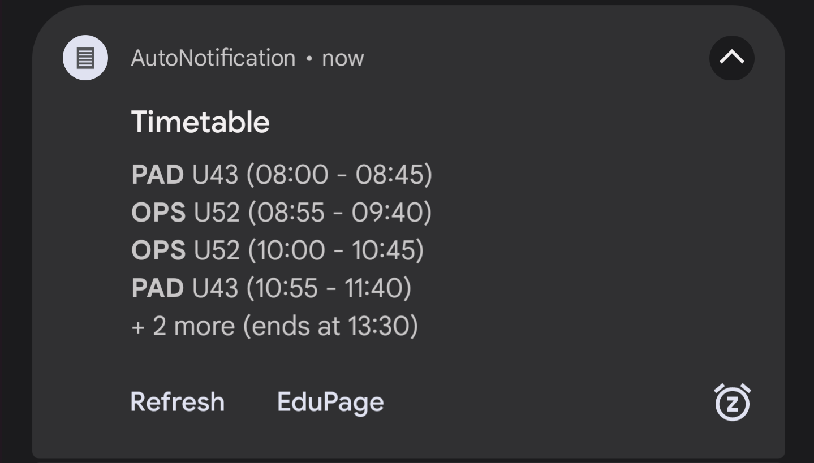
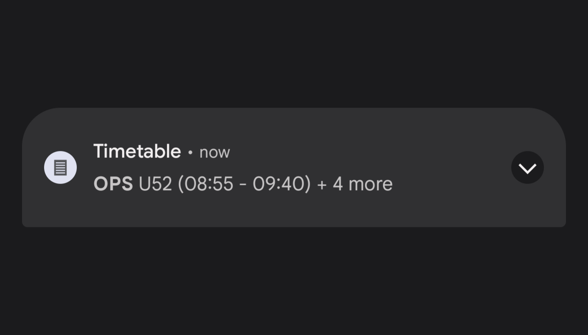

A timetable inside a notification. Fetches data daily and updates automatically. Detects off-days.
Built-in buttons for easy access to commute etc. Currently works with EduPage only! Go to Downloads to use this project with static data.
Developers, if you want to implement your own school's timetable,
go to For Developers here
If you find any bugs or have issues, message me on Discord at shadow_aya#0001. You'll be credited if you help me with bugs.
If you don't use EduPage and are not a developer, you can still use this project with the static script
Open this .py file in any text editor and enter your timetable there. All instructions are inside the file.
Make sure to name the script "timetable-script.py" in your Termux folder
The website doesn't process this input in any way except throwing it into the download.
This JSON is made to work with the default scripts, for any other script follow their instructions.
Example: sspbrno as in https://sspbrno.edupage.org
Install and run Termux. Inside it, install Python and the required library with this command.
$ pkg install python3
$ pip3 install edupage-api
$ pip3 install argparse
If you're having issues, first try to run the repo command and choose a working repository, then update and continue with Python's installation.
$ termux-change-repo
$ pkg update
Open your file explorer and locate the Termux directory.
After opening the directory, place the Python (.py) script and your login (.json) directly in root
Then, create a .termux/tasker subfolder(s). Place the shell (.sh) script inside this folder
Open the app and do whatever it asks on setup (idk lol). Then, go to the Tasker Profile link and import the project from Taskernet.
In your phone's settings, go to Tasker's App info > Permissions > Additional permissions > Run commands in Termux environment and Allow it
Doesn't really need anything except for permissions, just launch it and make sure it works.
You can create your own script for your own school and host it on Github too! I'll make sure to link you here as well.
It's also preferable that you make a custom Login JSON, the default one is specific to EduPage (obviously).
Maybe your script doesn't need to specify a subdomain, takes an API key, etc.
{
no_school,
data,
}
"data" : {
"i" : {
name,
classroom,
start,
end,
},
"i+1" : { ... },
...
}